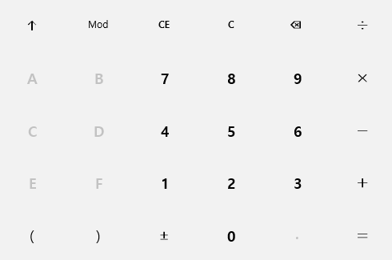

running = True def runHotkey(event): global running running = False Env.addHotkey(Key.F1, KeyModifier.CTRL, runHotkey) #Settings.MoveMouseDelay = 1 # 0 means no delay (instant moving), 1 = 1 second click() wait() type("calc" + Key.ENTER) wait() #click(Pattern("1491630710712.png").targetOffset(-40,72)) #Settings.MoveMouseDelay = 0 #for step in range(5): while exists() and running: click(Pattern().targetOffset(217,63)) click(Pattern().targetOffset(-40,66)) click(Pattern().targetOffset(211,136))